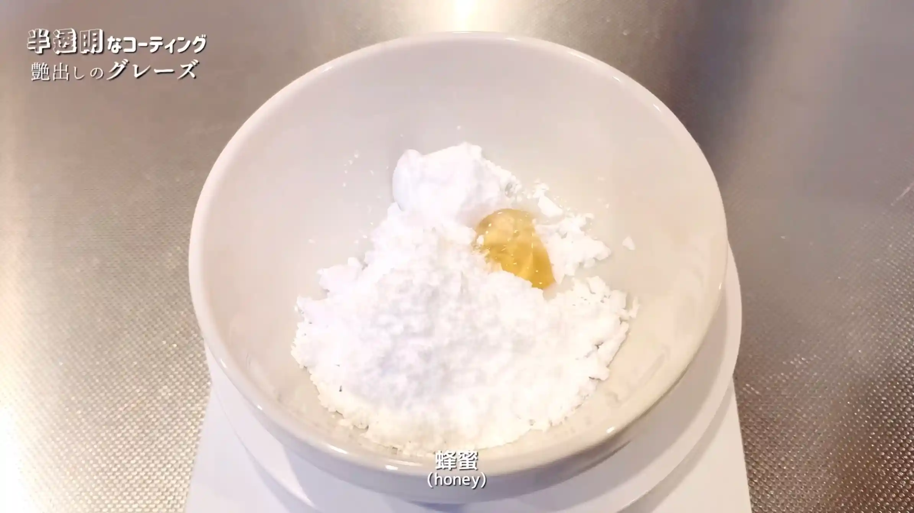
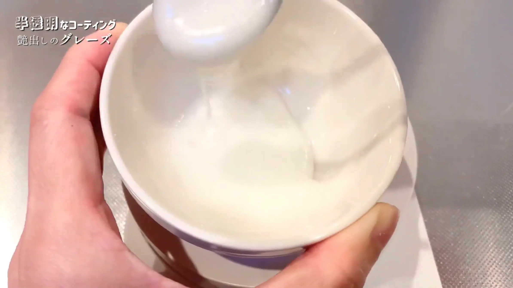

材料 12個分
※粉量を変えると自動計算されます
生地
ハニーグレーズ
アイシング
デコレーション
作り方
生地
STEP 1
温めた牛乳にドライイーストを入れ混ぜる
牛乳を温めておくことで、ドライイーストが働きやすくなります。熱すぎるとイーストの働きに影響するため、人肌程度を目安にします。
牛乳を温めておくことで、ドライイーストが働きやすくなります。熱すぎるとイーストの働きに影響するため、人肌程度を目安にします。
STEP 2
ホームベーカリーで生地を作る
ホームベーカリーに材料をセットし「生地コース」で生地を作ります。卵黄とバターがたっぷり入った生地はベタつきが強く、手捏ねするのは難しいですが、ホームベーカリーだと簡単にできるのでおすすめです。
ホームベーカリーに材料をセットし「生地コース」で生地を作ります。卵黄とバターがたっぷり入った生地はベタつきが強く、手捏ねするのは難しいですが、ホームベーカリーだと簡単にできるのでおすすめです。
STEP 3
生地を取り出して12等分し、丸める
生地を12等分して大きさをそろえ、表面がなめらかになるように丸めます。大きさをそろえておくと、発酵や揚げ上がりもそろいやすくなります。
生地を12等分して大きさをそろえ、表面がなめらかになるように丸めます。大きさをそろえておくと、発酵や揚げ上がりもそろいやすくなります。
STEP 4
生地を丸め直し、真ん中にお箸で穴を開ける
一度丸め直して生地の表面を整えてから中央に穴を開けると、形を整えやすくなります。穴はこの後に指で広げるので、小さめに開けておきます。
一度丸め直して生地の表面を整えてから中央に穴を開けると、形を整えやすくなります。穴はこの後に指で広げるので、小さめに開けておきます。
STEP 5
リングを細く、穴を大きく成形する
中央の穴を指で少しずつ広げ、ドーナツの形に整えます。リングを細くして穴を大きくすると、生地が厚くなりすぎず、軽くふんわりとしたドーナツになります。成形後の生地はオーブンシートにのせておきます。
中央の穴を指で少しずつ広げ、ドーナツの形に整えます。リングを細くして穴を大きくすると、生地が厚くなりすぎず、軽くふんわりとしたドーナツになります。成形後の生地はオーブンシートにのせておきます。
STEP 6
ラップをして室温で40分程おく
成形した生地を二次発酵させます。発酵時間は室温によって変わるため、時間は目安とし、生地がふっくらと膨らんだら、次の工程へ進みます。
成形した生地を二次発酵させます。発酵時間は室温によって変わるため、時間は目安とし、生地がふっくらと膨らんだら、次の工程へ進みます。
STEP 7
160℃の油で色づくまで揚げる
油の温度が高すぎると表面だけが早く色づき、中心まで火が通りにくくなります。生地の周りに油の気泡がジワジワ出るくらいを目安に、生地を焦がさないようじっくり両面をきれいなきつね色に揚げます。
油の温度が高すぎると表面だけが早く色づき、中心まで火が通りにくくなります。生地の周りに油の気泡がジワジワ出るくらいを目安に、生地を焦がさないようじっくり両面をきれいなきつね色に揚げます。
ハニーグレーズ
STEP 1
粉糖と蜂蜜を混ぜる
粉糖と蜂蜜を混ぜ合わせ、ドーナツを薄くコーティングするハニーグレーズを作ります。乾くと表面に透明感のあるツヤが出て、可愛い仕上がりになります。
粉糖と蜂蜜を混ぜ合わせ、ドーナツを薄くコーティングするハニーグレーズを作ります。乾くと表面に透明感のあるツヤが出て、可愛い仕上がりになります。

STEP 2
牛乳を加え、さらに混ぜる
牛乳を少しずつ加えて混ぜ、ドーナツにかけたりつけたりしやすい濃さに調整します。
牛乳を少しずつ加えて混ぜ、ドーナツにかけたりつけたりしやすい濃さに調整します。

アイシング
STEP 1
粉糖と卵白をミキサーで5分程混ぜる
粉糖と卵白を混ぜ合わせることで、白くなめらかなアイシングになります。白いアイシングは食用色素で着色したときも色が出やすく、カラフルな仕上げにも向いています。
粉糖と卵白を混ぜ合わせることで、白くなめらかなアイシングになります。白いアイシングは食用色素で着色したときも色が出やすく、カラフルな仕上げにも向いています。
STEP 2
お好みで食用色素を入れ、色をつける
食用色素を少量ずつ加えて混ぜ、お好みの色に仕上げます。
食用色素を少量ずつ加えて混ぜ、お好みの色に仕上げます。
動画でチェック
おいしく作るためのワンポイントコラム
強力粉100%、卵黄とバターをたっぷり。薄力粉を混ぜず、イーストの働きを活かして、超ふわふわのリッチな食感に仕上げた『アメリカンドーナツ』です！
おうちで手軽に作れるのに、まるでお店のようなふわふわ食感。そして、アメリカンなデコレーションを存分に楽しむための3つのコツをまとめました。
① ふわふわ生地のコツ
一般的なレシピでは、薄力粉を混ぜることが多いですが、今回は強力粉100%で作っていくのがポイント。違いはといえば、薄力粉を加えた場合は、サクサクした食感になるため、お菓子のような生地に。一方、強力粉100％の場合は、イーストの働きが活発になりふんわり食感が生まれるため、パンのような生地になるのが特徴。そのため今回は強力粉のみを使い、さらに卵黄とバターをたっぷり加えることで、超ふわふわリッチ食感に仕上げています。
② 成形のコツ
クリスピークリームドーナツのオリジナル・グレーズドのようにリングを細めに作るのがポイント。こうすることで、「時間が経ってもふわふわ」「どこを食べても甘くておいしい」ドーナツになります。生地を棒状にして端を繋げるベーグル式の成形もありますが、今回のようにリッチでベタつきやすい生地では繋ぎ目が割れやすいため、お箸で穴を開けて広げる成形がおすすめです。これなら特別な道具がなくても、お手軽にリングを作ることができます。
③ グレーズとアイシングのコツ
トッピングには、半透明でシャリッとしたはちみつ入りのグレーズと、卵白を使ってポップに色付けする不透明なアイシングの2種類を使い分けます。ベースの味わいを楽しみたいときはグレーズ、スプリンクルなどでカラフルに飾り付けたいときはアイシングと、表現したいデザインに合わせて使い分けるのがポイントです。
この超ふわふわ生地は、もはやドーナツ屋さんのクオリティ！カラフルなデコレーションをすれば、見た目も味も最高の可愛いドーナツができあがります！
おうちで手軽に作れるのに、まるでお店のようなふわふわ食感。そして、アメリカンなデコレーションを存分に楽しむための3つのコツをまとめました。
① ふわふわ生地のコツ
一般的なレシピでは、薄力粉を混ぜることが多いですが、今回は強力粉100%で作っていくのがポイント。違いはといえば、薄力粉を加えた場合は、サクサクした食感になるため、お菓子のような生地に。一方、強力粉100％の場合は、イーストの働きが活発になりふんわり食感が生まれるため、パンのような生地になるのが特徴。そのため今回は強力粉のみを使い、さらに卵黄とバターをたっぷり加えることで、超ふわふわリッチ食感に仕上げています。
② 成形のコツ
クリスピークリームドーナツのオリジナル・グレーズドのようにリングを細めに作るのがポイント。こうすることで、「時間が経ってもふわふわ」「どこを食べても甘くておいしい」ドーナツになります。生地を棒状にして端を繋げるベーグル式の成形もありますが、今回のようにリッチでベタつきやすい生地では繋ぎ目が割れやすいため、お箸で穴を開けて広げる成形がおすすめです。これなら特別な道具がなくても、お手軽にリングを作ることができます。
③ グレーズとアイシングのコツ
トッピングには、半透明でシャリッとしたはちみつ入りのグレーズと、卵白を使ってポップに色付けする不透明なアイシングの2種類を使い分けます。ベースの味わいを楽しみたいときはグレーズ、スプリンクルなどでカラフルに飾り付けたいときはアイシングと、表現したいデザインに合わせて使い分けるのがポイントです。
この超ふわふわ生地は、もはやドーナツ屋さんのクオリティ！カラフルなデコレーションをすれば、見た目も味も最高の可愛いドーナツができあがります！


お家にある材料で気軽に作れるのに、驚くほどふわふわ！トッピングもポップな『アメリカンドーナツ』のレシピです！コラムでは「ふわふわ生地のコツ」「成形のコツ」「グレーズとアイシングのコツ」の3つのコツをご紹介します。